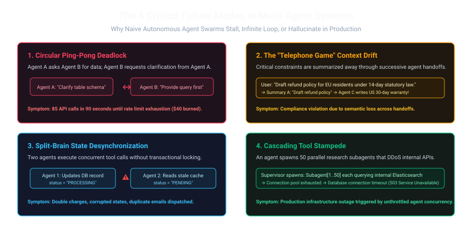
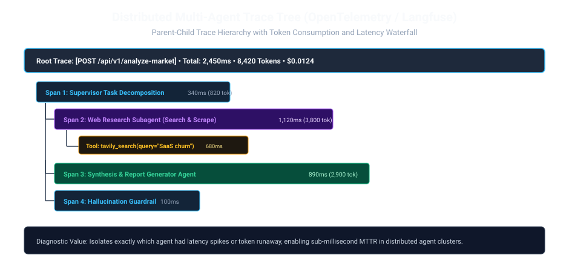

1. The 3 AM Incident: The $340 Runaway Ping-Pong Loop
In mid-2025, a consumer SaaS company deployed a peer-to-peer customer support agent swarm. The architecture featured an Intake Agent that routed queries to a Billing Agent or a Technical Agent, with free bi-directional handoffs so agents could collaborate on complex invoices.
At 3:14 AM, a user submitted an ambiguous edge-case ticket: "Can you refund the tax difference between my UK invoice and my German VAT exemption?"
The Billing Agent read the ticket, was unsure about the tax jurisdiction, and invoked the Technical Agent with a clarification request. The Technical Agent inspected the account, saw a custom billing flag, and replied back to the Billing Agent asking for tax calculation approval.
Because neither agent had a stopping condition or hard circuit breaker, they entered a circular clarification loop: 2,400 messages exchanged in 12 minutes, 14 million tokens consumed, exhausting the company's Claude Sonnet API rate limit, locking out all genuine users, and racking up $340 in inference costs on a $12 user ticket.
2. The 4 Critical Failure Modes in Multi-Agent Systems
Distributed systems of LLMs exhibit emergent failure dynamics that never happen in single-turn prompts. Any team deploying multi-agent swarms must build active defenses against these four failure modes:

To understand why multi-agent systems fail, consider two classic human corporate blunders:
- The Frozen Meeting (Deadlock): Two polite managers sit in a conference room. Manager A says: "After you." Manager B smiles and replies: "No, please, after you." Neither wants to make the final call, so the meeting lasts 4 hours and zero work gets done.
- The Telephone Game (Context Drift): You whisper a secret to the person on your left. Through 5 people, "The shipment arrives on Tuesday with 40 crates" mutates into "A monkey stole 40 cakes." When Agent A summarizes a document, Agent B summarizes the summary, and Agent C acts on it, subtle critical details vanish.
Multi-agent systems will do this continuously unless you enforce hard turn budgets and immutable state logs.
3. Mathematical Formalization of Agent Convergence
In distributed control theory, an autonomous system is stable if and only if its execution trajectory converges to an equilibrium state within a finite number of iterations.
Let $\mathcal{H}_t = (m_0, m_1, \dots, m_t)$ represent the accumulated conversation history at iteration $t$. The multi-agent loop converges if the information entropy $\mathbb{H}(\mathcal{S}_t)$ is strictly monotonically decreasing:
If $\mathbb{H}(\mathcal{S}_{t+1}) \ge \mathbb{H}(\mathcal{S}_t)$, the agents are either repeating clarifications (information stagnation / zero entropy change) or introducing contradictory hallucinations (information divergence / positive entropy increase). When entropy fails to decrease for 2 consecutive turns, the orchestrator must trip a Circuit Breaker.
4. Distributed Tracing Architecture (OpenTelemetry & Langfuse)
When a single HTTP request enters a microservice architecture, engineers trace it using distributed span headers (W3C Trace Context traceparent). Multi-agent systems require the exact same discipline.
Every multi-agent execution must establish a parent Root Trace. When a supervisor delegates work to a subagent, it injects its trace_id and creates a nested Child Span.

To make agent telemetry actionable in Datadog, Langfuse, or Jaeger, attach these standard attributes to every agent span:
agent.name: e.g.sql_researcherordocument_synthesizer.agent.turn_index: Integer counter tracking iterations within the current execution graph.llm.model_name: e.g.gemini-2.0-flash.llm.usage.prompt_tokens&llm.usage.completion_tokens.llm.cost_usd: Calculated in real-time to detect anomalous billing spikes before invoice surprises.tool.call.name&tool.call.status: Latency and exit code of external API executions.
5. Production Implementation: LangGraph Graph with Hard Circuit Breakers
Here is a battle-tested state machine orchestrator that enforces turn limits, accumulated token envelopes, and automated loop termination:
from typing import TypedDict, List
import time
from langgraph.graph import StateGraph, END
# 1. State Definition with Hard Invariants
class ResilientAgentState(TypedDict):
task: str
messages: List[str]
current_agent: str
turn_count: int # Maximum turn safeguard
total_tokens: int # Cost envelope safeguard
trace_id: str # OpenTelemetry trace identifier
status: str # "ACTIVE", "CONVERGED", "ABORTED_CIRCUIT_BREAKER"
MAX_ALLOWED_TURNS = 4
MAX_TOKEN_BUDGET = 10000
# 2. Worker Agent A: Data Fetcher
def agent_a_node(state: ResilientAgentState) -> dict:
turns = state["turn_count"] + 1
tokens = state["total_tokens"] + 850 # Token accounting
log_msg = f"[Turn {turns}] Agent A queried raw ledger data."
return {
"messages": state["messages"] + [log_msg],
"turn_count": turns,
"total_tokens": tokens,
"current_agent": "agent_b"
}
# 3. Worker Agent B: Data Validator
def agent_b_node(state: ResilientAgentState) -> dict:
turns = state["turn_count"] + 1
tokens = state["total_tokens"] + 920
log_msg = f"[Turn {turns}] Agent B requested schema re-verification."
return {
"messages": state["messages"] + [log_msg],
"turn_count": turns,
"total_tokens": tokens,
"current_agent": "agent_a"
}
# 4. Graceful Fallback / Circuit Breaker Node
def circuit_breaker_node(state: ResilientAgentState) -> dict:
abort_reason = "Turn budget exceeded" if state["turn_count"] >= MAX_ALLOWED_TURNS else "Token envelope exhausted"
fallback_msg = f"🚨 Circuit Breaker Tripped ({abort_reason}). Halting loop to prevent billing runaway."
return {
"messages": state["messages"] + [fallback_msg],
"status": "ABORTED_CIRCUIT_BREAKER"
}
# 5. Conditional Routing Guardrail
def guardrail_router(state: ResilientAgentState) -> str:
# Check hard circuit breaker invariants
if state["turn_count"] >= MAX_ALLOWED_TURNS or state["total_tokens"] >= MAX_TOKEN_BUDGET:
return "circuit_breaker"
return state["current_agent"]
# 6. Assemble State Graph
workflow = StateGraph(ResilientAgentState)
workflow.add_node("agent_a", agent_a_node)
workflow.add_node("agent_b", agent_b_node)
workflow.add_node("circuit_breaker", circuit_breaker_node)
workflow.set_entry_point("agent_a")
workflow.add_conditional_edges("agent_a", guardrail_router, {
"agent_b": "agent_b",
"circuit_breaker": "circuit_breaker"
})
workflow.add_conditional_edges("agent_b", guardrail_router, {
"agent_a": "agent_a",
"circuit_breaker": "circuit_breaker"
})
workflow.add_edge("circuit_breaker", END)
resilient_app = workflow.compile()
6. Production Observability Checklist
Before promoting any multi-agent service to live customer traffic, verify these operational checkpoints:
| Checklist Item | Target Metric | Remediation if Triggered |
|---|---|---|
| Turn Counter Cap | Max 3–5 iterations per graph execution | Route to Fallback node; alert engineering via Slack webhook. |
| Token Envelope Cap | < 15,000 tokens total per user query | Halt graph immediately; return best intermediate partial summary. |
| Span Propagation | 100% of child spans include valid traceparent |
Fix OpenTelemetry propagator middleware in MCP client. |
| Hallucination Guardrail Gate | Claim verification score ≥ 0.90 | Reject response; trigger query rewrite or fallback message. |